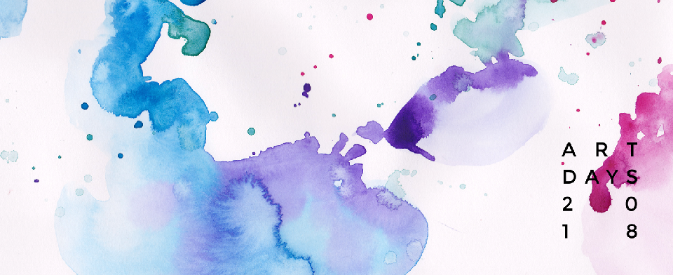
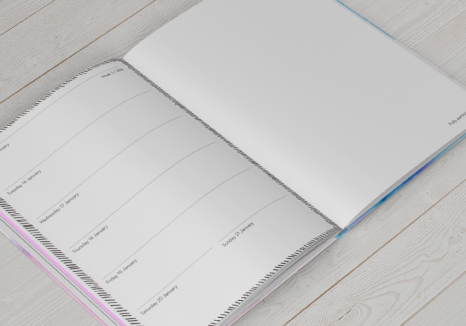
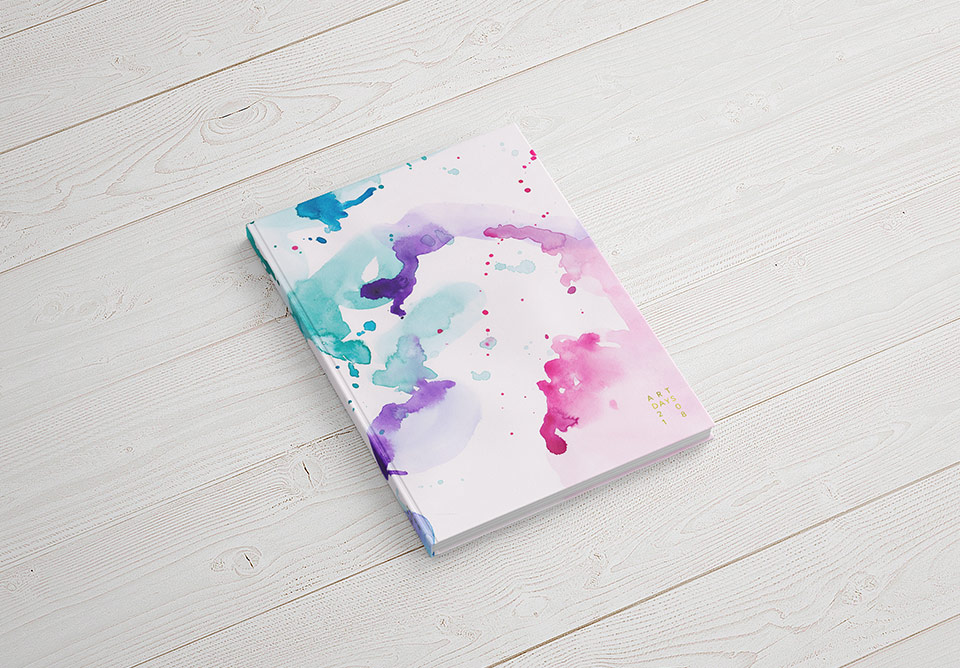

Art Days 2018 er en skitstebog og kalender i ét, lavet til kreative mennesker, der gerne vil lave et lille kunstværk hver uge i 2018.
Cover-grafikken har jeg malet i akvarel, scannet ind og gjort smukt til tryk.
Hele layoutet er minimalistisk. Her skal være plads til kunst. Malede rammer på uge-opslagene sætter gang i idéerne og komplimenterer kunstnerens egne værker.
Igennem hele bogen er der inspirerende opslag. Altid med plads til, at kunstneren kan gøre siderne til sine egne.
Alle bogens sider er af tykt, kridhvidt papir, så man kan skrive, tegne og male uden at det går igennem til næste side.
 Minimalistisk branding gør, at bogen er mere personlig for brugeren. Logoet er trykt i guld-folie på forsiden og ryggen.